Heating Systems · 34-03-02
Heater—Ford, Mercury and Meteor
The fresh air heater is a blend-air system and consists of the heater housing, a plenum chamber and defroster nozzles. The heater housing is located in the engine compartment and contains the blower and motor, the temperature blend door, and the heater core. The plenum chamber and defroster nozzles are located in the passenger compartment under the instrument panel.
Heater Controls
Fresh Air Heater Upper Control
Fresh air is supplied to the system from the cowl top grille through the blower into the heater housing. Air discharge is controlled by the position of the heater control (upper) lever. Air is discharged to the floor area with a small amount going to the defroster outlets when the lever is set at FLOOR, and through the defroster outlets when set at MAX defrost. All air flow is stopped when the lever is set at OFF.
Temperature (Lower) Control
The temperature of the discharge air is controlled by the control lower lever. This lever controls the blend-air door within the heater housing and mixes heated air with cool air to obtain the desired air temperature.
A four position blower switch is located above the control levers on Ford and Meteor models and below the control levers on Mercury models. The switch and a resistor provide three blower speeds.
Heater—Montego, Falcon and Fairlane
The fresh air heater is a blend air system connected to an opening in the right vent air duct. The entire heater assembly is located under the instrument panel (Fig. 1).
Outside air is drawn into the vehicle from the cowl through the right air duct, into the blower housing, forced through and/or around the heater core, mixed, and then discharged through the outlets in the discharge air register or defroster outlets (Fig. 2).
The air temperature is controlled by the position of the temperature air valve, or door, located between the blower and heater core in the heater housing. As the temperature lever is moved from LOW to HIGH; a Bowden cable moves the temperature door in the heater housing from minimum heat to full heat position to modulate the air flow through and/or around the heater core. The air through the core and the air through the bypass chamber is then mixed as it enters the plenum chamber.
A heater air valve, referred to as the heat-defrost door, is located in the plenum chamber to control the discharge air between heat and defrost, and close off all air in the OFF position. The heat-defrost lever actuates a Bowden cable connected to the heater air valve in the plenum chamber. Air flow through the plenum is directed, as required by the operator, through the discharge air outlets in the plenum, in the heat position; or up to the windshield in the defrost position.
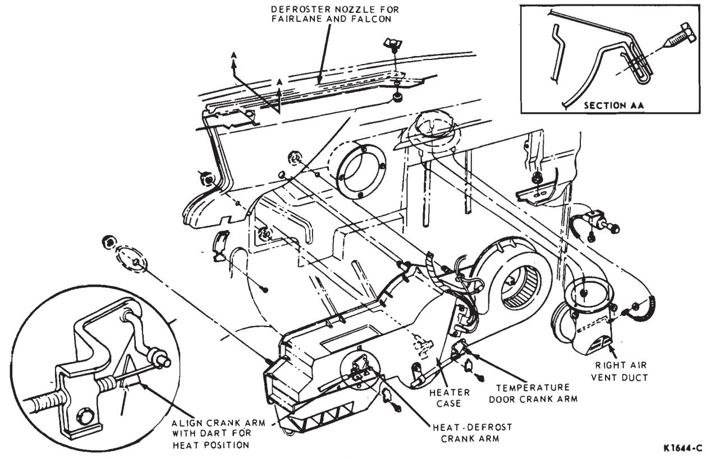
Fig. 1 — Heater Assembly—Montego, Maverick, Falcon and Fairlane
The air flow can also be modulated by setting the controls in any position between heat and defrost.
A single defroster nozzle leads to two slots in the forward instrument panel pad.
Three speeds are provided for the blower fan with a four position switch in the control assembly and a resistor assembly located in the heater housing. The resistor in the blower motor circuit controls the low and medium blower speeds.
To provide adequate air distribution on all vehicles, two air distribution register assemblies are provided. Vehicles equipped with consoles or economy air conditioning are equipped with a register that distributes the air to the left and right of the tunnel area. The register for standard vehicles has air outlets across the face of the register and a small outlet on the lower left end.
Fresh Air Heater-Mustang, Cougar and Maverick
The fresh air heater is a blend-air system and is located under the instrument panel. It consists of the heater plenum (housing), a blower, a defroster nozzle, an air distribution duct, and the heater controls.
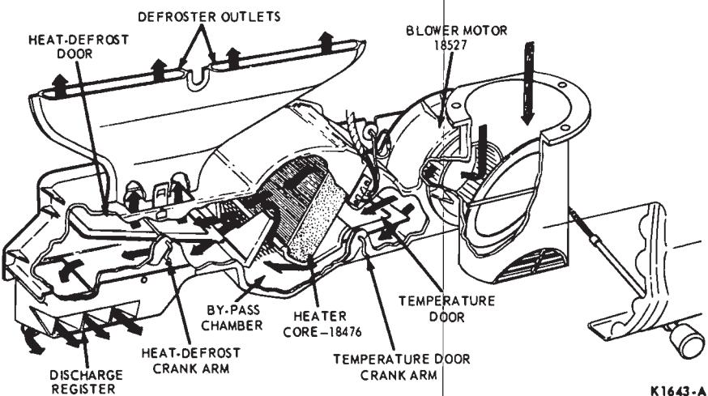
Fig. 2 — Heater Air Flow (Modulated)—Montego, Falcon and Fairlane
Power Ventilation Heater— Mustang and Cougar
The power ventilation heater is a blend air system similar to the fresh air heater and is located under the instrument panel. A power vent air duct, a vacuum switch, an instrument panel register, and a register to duct connector are used in addition to the fresh air heater components. The vacuum schematic and hose routings are shown in Fig. 3 and the control setting vacuum application chart is shown in Fig. 4.
Heater Controls
Fresh air is supplied to the system through an opening in the upper right cowl side panel. Air discharge is controlled by the position of the heater control (upper) lever. Air is discharged to the floor area when the lever is set for heat; through the defroster outlet when the lever is set for defrost; and through the instrument panel register (Power Ventilation Heater Only) when the lever is set for power vent. All air flow is stopped when the lever is set at off.
The temperature of the discharge air is controlled by the heater control lower lever. This lever controls the blend air door within the heater housing and mixes cool air with heated air to obtain the desired air temperatures.
A four position heater blower
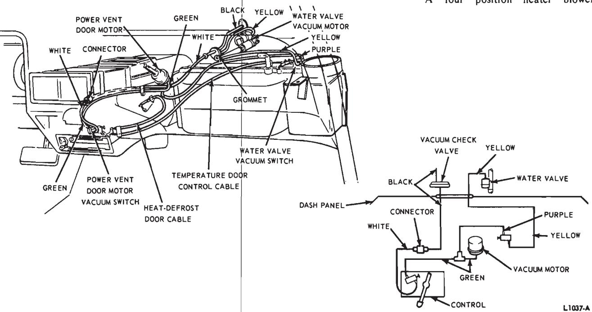
Fig. 3 — Power Ventilation Heater Vacuum Schematic
| FUNCTIONAL CONTROL LEVER POSITION | ||||||
|---|---|---|---|---|---|---|
| OFF | HEAT | DEFROST | POWER | |||
| VACUUM ACTUATED | POWER VEN DEFROST DO | IN POWER VENT POSITION V | ||||
| POWER VEI VACUUM SWI | SEALED | |||||
| COOL | CLOSED | |||||
| WATER VALVE | MOD | OPEN | ||||
| WARM | NO V | ACUUM | ||||
| WATER VALVE VACUUM SWITCH | COOL | OPEN | ||||
| MOD | _ | |||||
| $\dashv$ | WARM | SEALED | ||||
| CABLE CONTROLLED | TEMPERATURE (BLEND) DOOR POSITION | COOL | OUTSIDE AIR BYPASSES HEATER CORE AND DISCHARGED | |||
| COOL | THRU AIR DUCT TO FLOOR | THRU DEFROSTER NOZZLE | THRU AIR REGISTERS | |||
| MOD | OUTSIDE AIR GOES THRU AND AROUND HEATER CORE, MIXED AND DISCHARGED | |||||
| THRU AIR DUCT TO FLOOR | THRU DEFROSTER NOZZLE | THRU AIR REGISTERS | ||||
| WARM | ALL OUTSIDE AIR GOES THRU HEATER CORE AND DISCHARGED | |||||
| WANN | THRU AIR DUCT TO FLOOR | THRU DEFROSTER NOZZLE | THRU AIR REGISTERS | |||
| HEAT-DEFROST DOOR POSITION | IN OFF POSITION | IN HEAT POSITION | IN DEFROST POSITION | IN POWER VENT POSITION |
MOD-modulated V-vacuum NV-no vacuum
Fig. 4 — Power Ventilation Heater Control Setting Vacuum Application Chart—Mustang and Cougar switch is located to the left of the heater control levers. The switch and a resistor provide three blower speeds.
HEATER and Ventilation System-Thunderbird and Continental Mark III
Heating and Forced Ventilation System
system is standard on vehicles without air conditioning. The system consists of a heater, four-speed blower, four high level registers on the instrument panel, two floor level registers in front, two floor level outlets behind the front seat, one extractor vent under the rear window and a control assembly on the instrument panel to the left of the steering column.
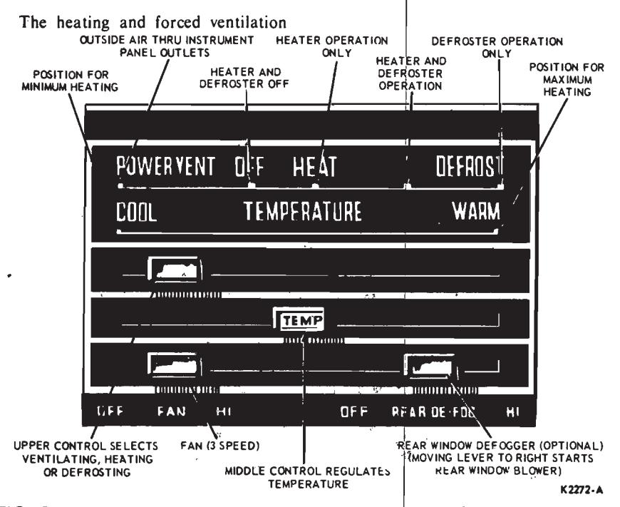
Fig. 5 — Heater Controls—Thunderbird and Continental Mark III
Air Outlets
The heating system is a blend-air system receiving outside air from the cowl air intake through the right cowl side panel. Air outlets under the instrument panel near the tunnel discharge warm air to both right and left front floor areas. A duct running along the tunnel leads to two outlets to provide warm air to the rear seat floor area.
Four registers in the instrument panel assembly discharge air into the passenger compartment for the forced ventilation system. These registers can be positioned to direct the air-flow coming out of the registers. Three of the registers are barrel-type registers that can be moved up and down. These three registers contain vertical vanes that can be positioned horizontally by rotating a horizontal wheel within each assembly for lateral distribution by a center sliding knob or for vertical adjustments by rotating the barrel. The right register incorporates a rotating ball for distribution of air. The push-pull knob adjacent to each of the registers will open or close the register.
Heater Controls
The control assembly to the left of the steering column, contains a functional control lever, a temperature control lever, a blower control switch and an available rear window de-
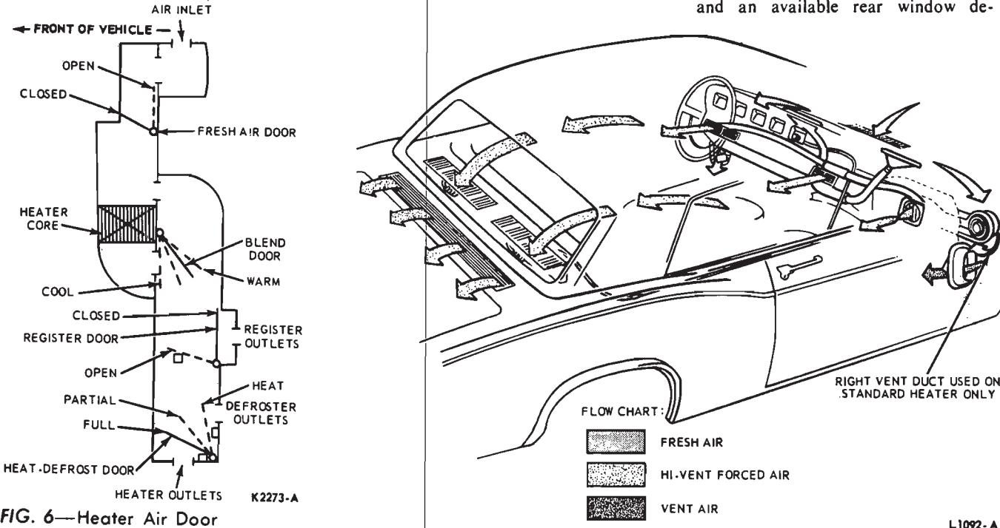
Fig. 6 — Heater Air Door Positions—Thunderbird and Continental Mark III
Fig. 7 — Body Ventilation Air Flow—Thunderbird and Continental Mark fogger or heated backlite switch (Fig. 5).
The functional control (upper) lever actuates a vacuum regulator that controls vacuum motors at the fresh air, register and heat-defrost doors, and the water valve.
The temperature control (lower) lever operates a control cable that controls the temperature-blend door in the plenum chamber which mixes fresh air with the warm air from the heater core in direct proportion to the blend door setting. When the temperature lever is in the COOL position, it physically actuates a water valve vacuum switch which is located on the bottom of the control assembly. The water valve vacuum switch closes the water valve when the temperature lever is in the COOL position, by applying vacuum to the water valve vacuum motor. The water valve is also closed when the functional control lever is in the OFF position. In the event of a vacuum failure, the system is designed to fail in the full defrost position.
A four-speed blower control switch, located below the heater control assembly, controls air velocity. A trol assembly, controls air velocity. A REAR DE-FOG (or heated backlite) switch mounted to the right of the blower control, controls de-fogging of the rear window.
Fig. 6 shows the positions of the fresh air, blend, register, and heat-defrost doors when the functional control lever on the control assembly is in the OFF position, and the temperature control lever is approximately midway between COOL and WARM. The positions of these doors are indicated by solid lines. The dotted lines indicate other possible positions of the doors.
Air Door Operation Fresh Air Door
The fresh air door can assume only two positions; open or closed (Fig. 6). It is vacuum controlled by the setting of the functional control lever and is open in all settings of the functional control lever except OFF. When the door is open, it allows air to flow from the outside air inlet toward the heater core.
Blend Door
Air coming through the fresh air door is forced through and/or around the heater core, depending on the position of the blend door which mixes the air (heated and fresh) as it enters the plenum chamber. The blend door is connected by a control cable to the temperature control lever. When the blend door assumes its COOL position, only fresh (unheated) air will enter the plenum chamber. When the blend door assumes its WARM position, only heated air will enter the plenum chamber. The blend door can assume any number of intermediate COOL positions between WARM.
Register Door
The register door (Fig. 6), like the fresh air door, is a two position door that is vacuum controlled by the setting of the functional control lever. When the register door is open, it directs the blended air that flows past the blend door to the hi-level registers on the instrument panel, and restricts air-flow to the heat-defrost door. When the register door is closed, all air from the blend door flows to the heat-defrost door. The register door is open only when the functional control lever is set in the POWER VENT position.
Heat Defrost Door
The heat-defrost door (Fig. 6), is a three position door that is vacuum controlled by the setting of the functional control lever. When the lever is in the HEAT position (Fig. 5), the heat-defrost door assumes the HEAT proximately 10% of the air will bleed the air through the floor outlets (approximately 10% of the air will bleed through the defrosters). When the control lever is set in the DEFROST position, the heat-defrost door assumes its Full position and directs practically all of the air through the defroster outlets, with a small amount of bleed air going to the heater outlets. When the control is set midway tion and directs approximately 50% of door assumes its partial defrost position and directs approximately 50% of the air to the defrosters.
The heat-defrost door vacuum motor is a dual diaphragm motor. Applying vacuum to one of the connectors on the motor causes the motor to move about halfway. Applying vacuum to both of the connectors on the motor causes the motor to move all of the way.
Water Valve
The flow of engine coolant through the heater core is controlled by the water valve. The water valve is controlled by the settings of both the functional control lever and the temperature control lever. The water valve opens and allows engine coolant to flow through the heater core whenever the temperature control lever is in any position other than COOL, except when the functional control lever is at OFF. With the functional control lever in the OFF position, the water valve is closed by vacuum from the vacuum regulator, which overrides the temperature lever.
Body Ventilation and Rear Vent System Front Ventilation
The front ventilation air ducts are located in the right and left cowl pancels and are controlled by two levers which are located to the left of the steering column on the lower surface of the instrument panel. A turnbuckle adjustment in each control cable is provided to insure a positive seal between the vent doors and inner surface of the ducts.
Front ventilation is controlled by moving the right and left control lever from the closed position (up) to any position within the vertical slots, to the full open position, or all the way down. Air deflectors are provided on both vent ducts to direct air to the right and left floor area.
Rear Vent and Controls
The rear (power) vent system draws stale air or smoke from the passenger compartment, through a double rear vent assembly. The system reduces fogging of the rear window and provides improved air circulation throughout the passenger compartments.
The rear ventilation system is actuated by the Rear Vent control, located in the vent control bezel on the lower left side of the instrument panel. Moving the control to OPEN causes vacuum to be applied to the vacuum actuators on the rear vent assemblies. Moving the control to CLOSE, releases the vacuum to the actuators which are spring loaded to close.
On units without an air conditioner, maximum forced ventilation is attained with the heater upper control lever on POWER VENT and the
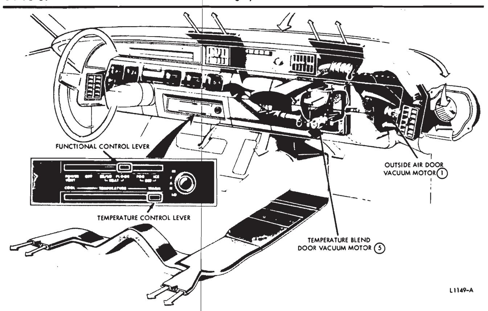
Fig. 8 — Standard Heater System Air Flow (Maximum Heat Position)—Lincoln Continental
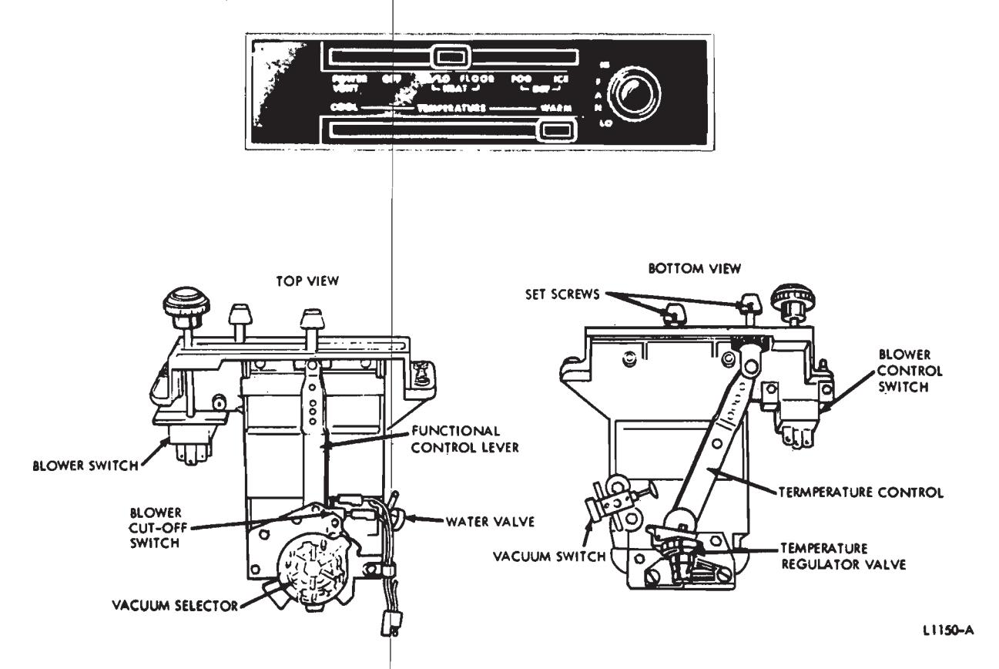
Fig. 9 — Standard Heater Control Assembly—Lincoln Continental
blower motor on HI.
Complete body ventilation is provided for all climatic conditions for either heater system, or heater and forced ventilation system. Fig. 7 shows the interior airflow when the forced ventilation, right and left vents, and the rear vent systems are in the open position, to provide maximum ventilation with all windows closed.
Standard Heater System—Lincoln Continental
The Lincoln Continental standard heater system receives outside air from the upper cowl air intake through the right side cowl panel. The cutside air door (1) is located in the heater case between the heater core and blower motor and wheel assembly. This door restricts air through the system in the OFF control position. The Temperature Blend Door (5) in the plenum chamber is actuated by a vacuum regulator on the control assembly. The regulator modulates vacuum to the Temperature Blend Door vacuum motor in proportion to the setting of the temperature control lever. Warm air through the heater core is mixed in the heater plenum with the cool air that by-passes the core before being discharged through four registers in the instrument panel, through the heater plenum air outlets, or through the defroster nozzles.
The control assembly is located in the lower instrument cluster to the right of the steering column (Fig. 8).
Two rectangular center registers pivot up and down. Vertical vanes within each register are positioned by sliding a horizontal bar for air deflection. Sliding the bars outboard closes the registers. Two rectangular registers located in the far right and left sides of the instrument panel can be pivoted right and left and horizontal vanes in each register are actuated by moving the slide bars up to open and down to close.
System Components
Controls
-
The functional control lever (upper lever, Fig. 9) actuates a vacuum selector that controls vacuum motors at the Outside Air Door (1), vent/heat door (6) and heat/defrost door (7). In the OFF position, a micro switch (blower cut-off switch) adjacent to the vacuum selector is activated by the selector cam plate to turn off the blower. The blower is on in all other control positions and the four blower speeds are controlled by the electrical circuit through the resistors in the blower resistor assembly located on the front of the heater case assembly.
The temperature control lever (lower lever, Fig. 8) actuates a vacuum regulator on the control assembly that modulates vacuum to the Tem- perature Blend Door Vacuum Motor (5), from full vacuum in COOL position to no vacuum in WARM position. The water valve vacuum switch on the control assembly is also activated when the lever is in COOL position to close the heater water valve (4) (vacuum).
The blower switch is located to the right of the control levers in the control assembly. Turn the blower switch knob clockwise from LOW through two medium speeds to HIGH, to control air volume. To turn the blower OFF, the functional control lever is turned to the OFF position.
-
The Heater Water Valve and
-
The Heater Water Valve and vacuum motor assembly (4) is located immediately outside the heater case in the heater inlet hose. The inlet hose is 5/8 inch I.D., the outlet hose is 3/4 inch I.D. (Fig. 8).
Heater Case Assembly
The heater case assembly (Fig. 49) is located on the engine side of the dash panel to the right of the center-line and contains the heater core, outside air door (1) and blower motor and wheel assembly.
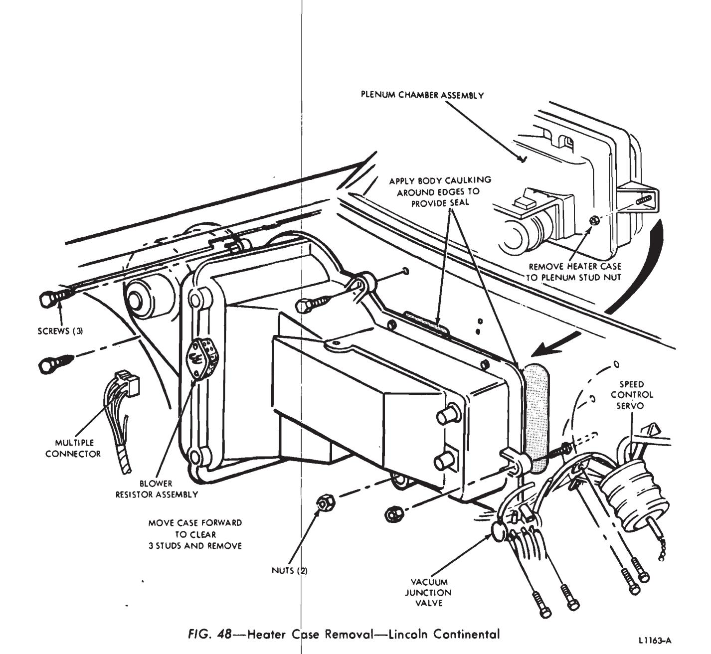
Fig. 49 — Standard Heater Core Removal—Lincoln ContinentalPlenum Chamber
The plenum chamber (Fig. 50) located under the instrument panel contains the Temperature Blend Door (5), vent/heat door (6) and Heat/De-GRILLE 18C490
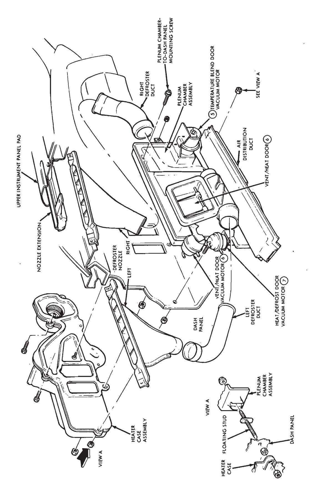
Fig. 50 — Standard Heater System—Lincoln Continental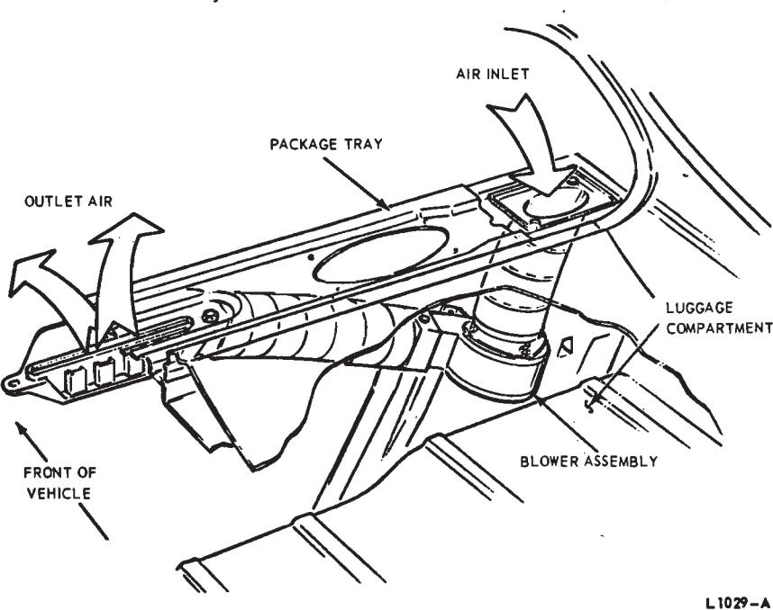
Fig. 10 — Remote Rear Window Defogger Installation
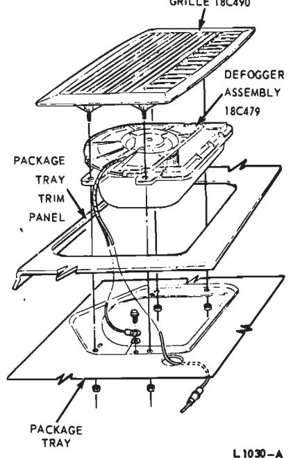
Fig. 11 — Integral Rear Window Defogger Installation
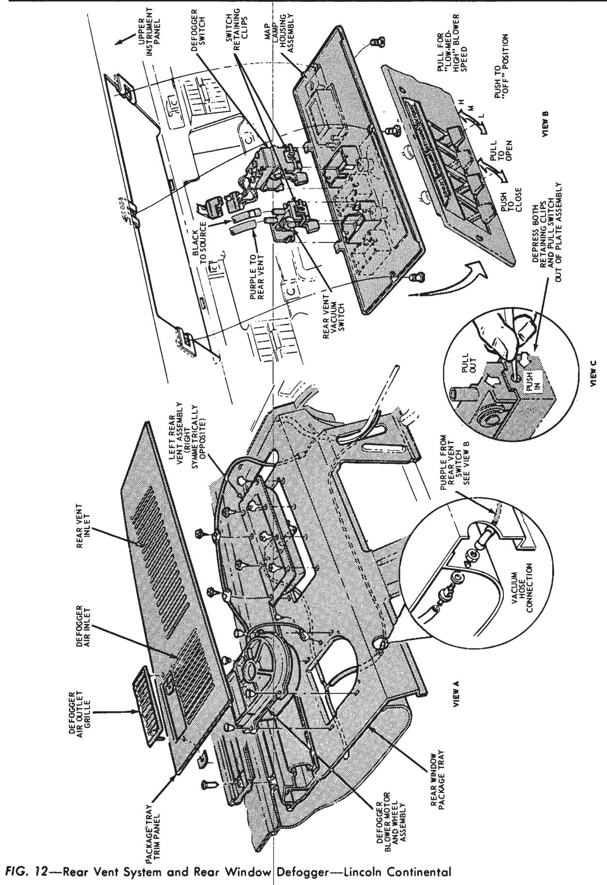
Fig. 13 — Rear Window Defagger Vacuum and Electrical Schematics
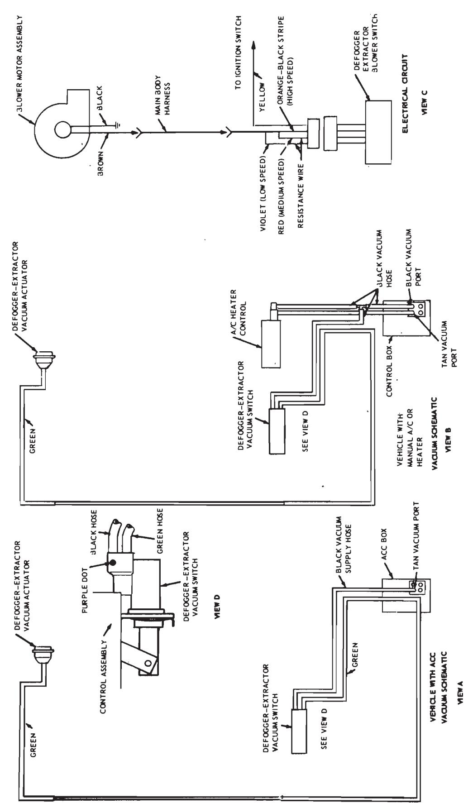
frost Door (7). Two rectangular openings in the dash panel are provided for air passage from the heater case into the plenum.
Air Distribution Duct
The air distribution duct (Fig. 8), part of the plenum chamber, distributes air to the front floor and a rear seat heat duct leading from the distribution duct distributes air to the right and left rear floor areas.
Defroster Nozzles
The right and left defroster nozzles (Fig. 8) are connected to air outlets on the plenum chamber with rigid air ducts.
Registers
Air to the four registers in the instrument panel (Fig. 8) is delivered from the plenum directly to the two center registers through the center air distribution duct and to the right and left outboard registers through semirigid ducts connected to openings in the center duct.
Rear Seat Heat Duct
The rear seat heat duct (Fig. 8) seats firmly onto the bottom opening in the air distribution duct on the plenum chamber. The duct is under the carpet on the right floor paralleling the tunnel, and air is discharged through two outlets on each side of the tunnel to the rear seat floor area.
Rear Window Defogger—Ford, Mercury and Meteor
A new remote defogger is used on Ford Models 63, Meteor Models 57C and F, and Mercury Models 53C, F, and M, 63G and H, and 57C, F and M. This defogger differs from the defogger used on other models by the location of the blower which is located off to the side of the outlet nozzle (Fig. 10). The defogger used on other models has the blower integral with the air outlet (Fig. 11).
Rear Vent System and Rear Window Defogger—Lincoln Continental
Fog accumulating on the inside of the rear window can be cleared by the rear window defogger, located in the rear package tray (Fig. 12) by activating a control switch in the instrument panel map lamp housing. Inside air is drawn into a blower housing and immediately discharged to the rear win- dow. A four-position switch provides three blower motor speeds.
The rear window defogger assembly also includes a valve assembly with vacuum-actuated rear vent doors that permit smoke extraction from the passenger compartment through openings in the package tray trim panel over each vent assembly and discharge from the vehicle through grilles immediately outside the rear window. Two control levers located in the instrument panel map lamp housing on the right side of the steering column are provided to select the three blower speeds and controls the valve position for defog operation (no vacuum) and smoke extraction (vacuum). Refer to Fig. 13.
Rear Window Defogger— Thunderbird and Continental Mark III
The rear window defogger is an integral unit and is located in the center of the package tray (Fig. 11). Inside air is drawn into the defogger assembly through the front part of the grille and is discharged towards the rear window through the rear part of the grille. The defogger blower switch is located next to the heater or heater-air conditioner blower switch on the instrument panel.